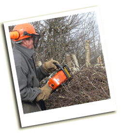
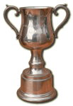
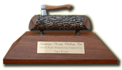
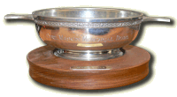

Any person may apply to enter the Open category.
Prize: The Denis Russell Cup, presented by the Isle of Wight AONB Partnership

The Annual IW Hedgelaying Competition
2026 Isle of Wight Hedgelaying Competition
The 29th Annual Hedgelaying Competition will be held on 28 February 2026 from 10am until 4pm at Atherfield Farm, by kind permission of Mrs Annie Henton.
Subscribe to our newsletter to be informed.
Entry is free for competitors and spectators - all are welcome.
Lead sponsors this year: Landscape Therapy; IW AONB; Pinkeye Graphics
Online entries will open later this year.
(No competition was held in 2025)
(No competition was held in 2024)
(No competition was held in 2022)
(No competition was held in 2021)
(No competition was held in 2019)
(2014 competition cancelled due to poor weather)
Each year, the Isle of Wight Hedgerow Group organises the Isle of Wight Hedgelaying Competition.
The IW hedgelaying competition has been run by the IW Hedgerow Group for many years. A separate competition is run by the Wight Nature Fund.
The following is the report of the 2007 competition, as
reported by Jon Moreno of the Isle of Wight County Press.
A
RECORD number of spectators witnessed another captivating IW Hedgelaying Competition
with people of all abilities pitting their skills against each other on Saturday.
The 16th annual challenge, held at Blackwater Hollow, saw Godshill man Dick
Pulleine make it a highly impressive four-in-a-row in the open competition. 
Dick Pulleine carries out the finishing touches Mr Pulleine, 57, of
Bleak Down, who runs a coppicing business, retained the AONB Cup, making
it his eighth success since 1993, the year the competition began.
“There is no secret to my success. I do this kind of thing in the winter for a living — planting new hedgerows or refurbishing them,” said Mr Pulleine. “I’m well pleased with another win and enjoy some competition, though I have to say this year was one of the toughest I’ve had to date. Taking part each year gives me a buzz and I always set out to win. With the cup, I also won a new chainsaw, which will do me nicely.”
The judges, wood sculptor Paul Sivell and expert hedgelayer Alan Ashby, of Tunbridge Wells, had a tough task trying to pick a winner in the team event, which attracted nine entries. IW Council countryside rangers Richard Temple, Karl Dyson and Nick Webb, who called themselves The Power Rangers, took part in the competition for the first time and won The Landscape Therapy Challenge Trophy. In a day of firsts, National Trust head warden Robin Lang, 44, also won the novices event in his first-ever appearance in the contest, scooping The Mary Sitch Challenge Cup, a pruning saw and Hursts gift tokens for his efforts.
“I had always watched the competition and had been thinking about taking part for a long time, but never got round to it until this year. It was great fun, hedgelaying with people I know. It was a really nice atmosphere there and would have enjoyed taking part whether I had won or not,” he said.
Read other media reports of previous competitons.
Categories
There are three categories for the competition.
| OPEN Any person may apply to enter the Open category. Prize: The Denis Russell Cup, presented by the Isle of Wight AONB Partnership |
|
| NOVICE Entrants to the Novice category must not have won any hedgelaying cup or prize more than twice. Prize: The Mary Sitch Cup |
 |
TEAM The Team category may consist of up to four persons, of whom no more than one can be ineligible for the Novice category. Prize: The Landscape Therapy Trophy |
 |
|
Since 2017 THE LANDSCAPE THERAPY TROPHY Since 2008 THE CUP Until 2010 THE WIGHT WILDLIFE AWARD (Pictured, now retired) |
 |